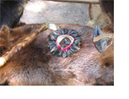
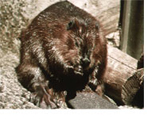
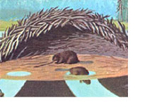
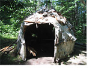

Algonquin
The Algonquins lived in wigwams, not teepees. Wigwams were made in the shape of a beaver’s house with arched wooden supports, covered with birch bark. The dark bark was always faced inside—white bark burns spectacularly but the red is very resistant to fire and their fire was in the center. It would never rain inside because the fire was like a wall of hot air that pushed the rain back. Birch bark doesn’t rot and it’s waterproof. That’s why it was used for so much, particularly canoes and containers. In the winter the base of the wigwam was covered with pine needles, moss and furs, then packed with bodies to keep the Algonquin warm. All cooking was carried on outside the wigwam, but hot stones were brought in at night for warmth as well.
The Algonquin were hunters and gatherers, not farmers. The animals were not only useful for their skins and meat, but for the things they taught the natives.
Lynx and bobcat taught the Algonquin about snowshoes. They walked with spread paws and were light on their feet. The Algonquin used round snowshoes, originally made from spruce branches. The round snowshoes were to fool enemy warriors tracking them so they couldn’t figure out whether they were coming or going. Warriors, while in training, also had to wear deer hooves around their ankles that rattled, teaching them to walk lightly on their toes.
Beaver taught the Algonquin how to work hard. When they skinned the beaver, they originally opened the animals from the back and noticed the position of their ribs and muscles. This gave the Algonquin the idea of how to make the canoe. They also learned how to make a wigwam from the shape of the beaver's house. Teepees were very small due to forest constraints and were only used for overnight hunting expeditions.
Otter was always playful. He taught the natives to enjoy life. His hide was cut only from top and used as an arrow/quiver holder and also as a puppet.
Bear told them what to eat. They observed the bear and followed its example. Everything it ate was safe for humans.
Raccoon explained hygiene. He washed his face and hands before and after every meal. We can all learn from raccoon.
Skunk protected them from the bear. It sprayed bear in the face, and it felt like pepper spray to the animal. Skunks were sometimes tamed for this reason. They could be picked up—once their feet left the ground they couldn’t spray, but they could still bite.
For an authentic interactive experience of an Algonquin Indian Village, visit Mawandoseg Kitigan Zibi: www.mawandoseg.com